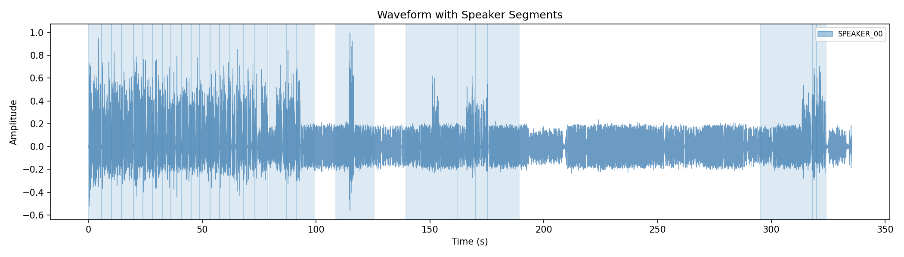
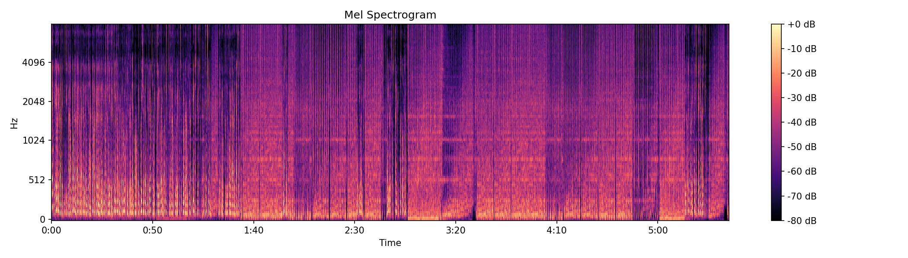
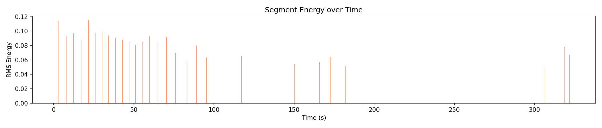
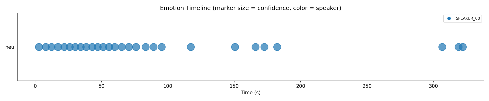

SpeakScan analysis report
| Speaker | Talk Time | Share | Turns |
|---|---|---|---|
| SPEAKER_00 | 193.6s | 100.0% | 1 |
| Emotion | Count | Share |
|---|---|---|
| neu | 28 | 100.0% |
| Language | Segments | Share |
|---|---|---|
| en | 28 | 100.0% |




Hey, welcome kicks here. In this video I'm going to beat Minecraft, but I am in creative.
You might think this is way too easy, and you're right, but I have one rule.
I can't spawn in any items that I don't have, so I can't just make a portal and fill it with
Ender Eyes. Instead I need to go to the Nether and kill at least one place and one Ender Man.
That way I have one eye of Ender and because I'm in creative that means I have infinite.
I hope you understand the idea. Maybe it's not the most hard challenge, but I just want to see
how easy it is. I hope you enjoyed the video. Because I think I don't need much for this challenge,
I only take the Iron from the shipwreck. I know that there's a rune portal I'm going to,
there's a gold on sword with looting on it. That's perfect for killing the blaze and the Ender Man.
When I have one rod and one pearl, I can get to the End portal. Along the you think this challenge
is going to take me, let me know in the comments. And if you like this video, please like,
subscribe, this helps me a lot, and it's completely free. If you want to see a real beating Minecraft
video, these are normally uploaded on Sunday. I will put a playlist in the description.
These are the challenge I made, beating Minecraft without grafting, beating Minecraft without
jumping, beating Minecraft super flat, beating Minecraft with only leather armor and wooden tools,
beating Minecraft without eating, and beating Minecraft half size. If you like those videos,
please subscribe. When I got to the Nether, I searched for a blaze and an Ender Man.
When I got the blaze, I got back to the Overworld. But it doesn't create if you don't have the
tube, I do grafting boxing inventory, I took an eye of Ender out of the creative menu,
and then, when searching for the stronghold.
When I found the strong, I decided to dig down.
And I found the portal, I immediately fill it up and went to the end.
When I got into the end, the first thing I did was destroy all the crystals. After that,
I only needed to take out the dragon. And to be honest, with a golden sword, this takes longer than I
thought.
But in the end, I was able to accomplish this challenge and beat Minecraft in creative.
Then I want to thank you guys for watching.
If you like this video, please like, subscribe and as I always say, kicks out.